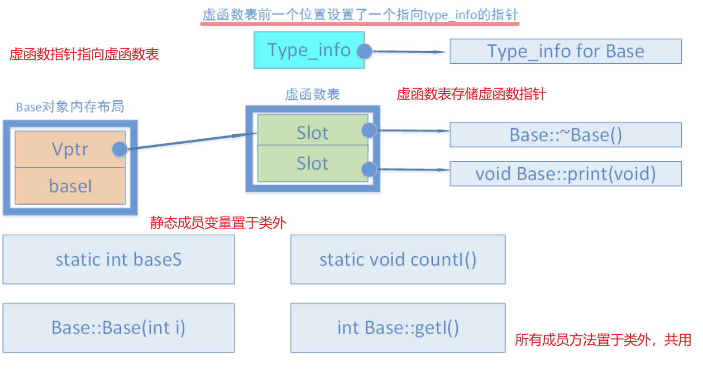

cpp知识点小结-第二部分
C++基础篇
C++基础
简述智能指针
智能指针其作用是管理一个指针，避免申请的空间在函数或对象生命周期结束时忘记释放，造成内存泄漏。智能指针即是C++ RAII的一种应用，可用于动态资源管理，资源即对象的管理策略。使用智能指针可以很大程度上的内存泄漏的问题，因为智能指针就是一个类，当超出了类的作用域是，类会自动调用析构函数，析构函数会自动释放资源。在C++11开始，提供了unique_ptr，shared_ptr，weak_ptr。在此之前，C++98中的auto_ptr在C++11中已废弃。
unqiue_ptr：某个时刻只能有一个unique_ptr指向其管理的动态内存上的对象（独占式），所以不提供copy操作，只能在不同unique_ptr对象间move。当这个unique_ptr销毁时，它所指向的对象也会被销毁。（性能和普通指针相当，且重载了对数组对象的支持，但是C++11中未实现make_unique方法，make_unique在C++14中已加入）
shared_ptr：多个shared_ptr智能指针可以共同使用同一块堆内存（共享式）。并且，由于该类型智能指针在实现上采用的是引用计数机制（通过use_count()查看），即便有一个 shared_ptr 指针放弃了堆内存的“使用权”（引用计数减 1），只有引用计数为 0 时，堆内存才会被自动释放。
拓展：引用计数增加是否线程安全
[ shared_ptr的线程安全性、shared_ptr是线程安全的吗 ]
是的，shared_ptr有两个数据成员，对内存对象的读写不能原子化。shared_ptr的引用计数本身是安全且无锁的，计数器的实现应当是原子的，C++11中提供了atomic类。多个线程同时读同一个shared_ptr对象是线程安全的，但是如果是多个线程对同一g个shared_ptr对象进行读和写，则需要加锁。
weak_ptr：为了配合shared_ptr而引入的weak_ptr智能指针，它指向一个由shared_ptr管理的对象，但是不控制所指对象的生命周期，也就是将一个weak_ptr绑定到一个shared_ptr不会改变shared_ptr的引用计数。它只可以从一个shared_ptr或另一个weak_ptr对象构造。因此，可被用来解决循环引用的问题。
拓展：weak_ptr注意点
weak_ptr没有提供常用的指针操作，无法直接访问资源，需要先通过weak_ptr::lock()方法提升为shared_ptr强智能指针（loick方法返回一个shared_ptr），才能访问资源。可以用weak_ptr::expired()检测其指向的内存对象是否已经失效，若失效则weak_ptr::lock()返回的是一个空的shared_ptr对象。
拓展：weak_ptr的其它使用场景
[ weak_ptr 的几个应用场景 —— 观察者、解决循环引用、弱回调 ]
观察者模式：若某个对象只关心内存资源的状态、引用计数等，那么应当使用弱引用来“观察”内存资源。
弱回调：如果对象还活着，就调用它的成员函数，否则忽略之。例如，多线程访问共享对象的线程安全问题：线程A和线程B访问一个共享的对象，如果线程A正在析构这个对象的时候，线程B又要调用该共享对象的成员方法，此时可能线程A已经把对象析构完了，线程B再去访问该对象，就会发生不可预期的错误。因此，使用weak_ptr可以判断共享对象是否仍然有效，避免无效调用。
循环引用场景：两个对象互相使用一个shared_ptr成员变量指向对方的会造成循环引用，导致引用计数失效。（其他方法：手动释放）
为什么unique_ptr的Deleter是模板类型参数，而shared_ptr的Deleter不是
[ unique_ptr和shared_ptr的deleter使用区别 ]
答案是效率。unique_ptr的设计目标之一是尽可能的高效，如果用户不指定Deleter，就要像原生指针一样高效。
C++ 中内存分配情况
[ C++内存分区 ]
C++内存分区模型：两部分（代码区、数据区）、三部分（程序存储区、静态存储区、动态存储区）、四部分（代码区、全局区、栈区、堆区）、五部分（程序代码区、全局/静态区、文字常量区、栈区、堆区）
栈：由编译器管理分配和回收，存放局部变量和函数参数。
堆：由程序员管理，需要手动malloc/free进行分配和回收，空间较大，但可能会出现内存泄漏和空闲碎片的情况。(拓展：自由存储区的概念)
全局/静态存储区：分为初始化和未初始化两个相邻区域，存储初始化和未初始化的全局变量和静态变量。
常量存储区：存储常量，一般不允许修改。
代码区：存放程序的二进制代码。
自由存储区与堆有什么区别？
[ C++ 自由存储区是否等价于堆 ]
malloc在堆（heap）上分配的内存块，使用free释放内存，而new所申请的内存则是在自由存储区（free store）上，使用delete来释放。虽然编译器通常基于malloc/free实现new/delete，但是堆与自由存储区并不等价。从概念上来讲堆是操作系统维护的一块内存，而自由存储区是C++中通过new与delete动态分配和释放对象的抽象概念。所以，通过重载new/delete可以将其它部分的内存作为自由存储区。
堆和栈的区别
- 栈：是一段连续的内存空间，由编译器进⾏管理分配和回收，⼀般保存的是局部变和函数参数。比如函数调用的时候会用到栈，⾸先⼊栈的主函数的下⼀条可执⾏指令的地址，然后是函数的各个参数，参数入栈顺序一般是自右向左。栈是⾼地址向低地址扩展，栈底为⾼地址，空间较⼩。
- 堆：不连续的空间，需要手动申请和释放。系统中有⼀个空闲链表，当有程序申请的时候，系统遍历空闲链表找到第⼀个⼤于等于申请⼤⼩的空间分配给程序。堆是低地址向⾼地址扩展，空间较大，较为灵活。
（栈的最大容量是系统预先规定好的，在Window下，栈的大小是2MB，Linux下，默认栈空间大小为8MB，可通过ulimit -s来设置。堆的大小和虚拟内存）
函数参数传递
按值传递：被调函数的形式参数作为被调函数的局部变量处理，会在栈中开辟内存空间以存放由主调函数传递进来的实参值，从而形成了实参的一个副本。
地址传递：指针传递参数本质上是值传递的方式，它所传递的是一个地址值。被调函数的形式参数作为被调函数的局部变量处理，会在栈中开辟内存空间以存放由主调函数传递进来的实参值，从而形成了实参的一个副本。
引用传递：形参相当于是实参的“别名”，对形参的操作其实就是对实参的操作，在引用传递过程中，被调函数的形式参数虽然也作为局部变量在栈中开辟了内存空间，但是这时存放的是由主调函数放进来的实参变量的地址。
从编译的角度看，在生成符号表的时候，引用变量的地址值是引用对象的实际地址，而指针变量的地址值是该指针变量自身的地址，随意可以改变指针的内容，即指向的值。
const作用
const 修饰基本类型数据类型、修饰指针（常量指针和指针常量）和引用、函数返回值，实现常量化。
类成员函数中，可以函数定义末尾添加const，该函数不允许修改类的数据成员。
- const成员函数可以访问非const对象的非const数据成员、const数据成员，也可以访问const对象内的所有数据成员；
- 非const成员函数可以访问非const对象的非const数据成员、const数据成员，但不可以访问const对象的任意数据成员；
- 良好的编程风格：在声明一个成员函数时，若该成员函数并不对数据成员进行修改操作，应尽可能将该成员函数声明为const 成员函数。
const 修饰指针如何区分?
const int * p1; //指向整形常量的指针，它指向的值不能修改，但可以指向其它整型常量 int * const p2; //指向整形的常量指针 ，它不能在指向别的变量，但指向（变量）的值可以修改。 const int *const p3; //指整形常量的常量指针 。它既不能再指向别的常量，指向的值也不能修改。
static作用
- 修饰局部变量：局部变量通常存放在栈区，其所处的局部语句结束时生命周期结束，若使用static修饰，变量便会存放在静态数据区，生命周期和整个程序一致。（不改变作用域）
- 修饰全局变量：普通全局变量对其它文件时可见的，可以通过extern关键词声明，若用static修饰，则其作用域仅限本文件。
- 修饰函数：同全局变量，改变函数的作用域。
- 修饰类：修饰成员变量/函数则表示成员变量/函数属于一个类而不是属于此类的任何特定对象。静态成员变量在存储空间中只存在一个副本，可以通过类和对象去调用。静态非常量数据成员，其只能在类外定义和初始化，在类内仅是声明而已。 静态成员函数属于整个类所拥有，这个函数不接收this指针，因而只能访问类的静态成员变量。
volatile和extern作用
volatile：三个特性是易变性（从内存重读）、不可优化性、顺序性。
extern：修饰在变量或者函数的声明前，用来说明 “此变量/函数是在别处定义的，要在此处引用”。（extern声明的位置对其作用域也有关系。extern会加速程序的编译过程。）
extern还可用于指示C或者C++函数的调用规范，告诉链接器使用C函数规范来链接（）。
define 和 const 区别
define：宏定义实际上是在预编译阶段进行处理，仅执行字符串展开，没有类型，也没有类型检查，占用代码段，因此运行时系统并不为宏定义分配内存（汇编立即数），定义后在之后的程序中可用。其他功能包括定义常量、变量、条件编译。
const：在编译期间进行处理，const有类型，也有类型检查，占用数据段空间，程序运行时系统会为const常量分配内存。（汇编内存地址）
（*编译器可能不分配内存而将常量添加到符号表）
C和C++区别
C++兼容C，但是C++在语法、关键词、重载、面向对象、泛型编程上有更多特性。
拓展：C++面向对象的三大特征
- 封装：把客观事物封装成抽象的类，一个类就是一个封装了数据以及操作这些数据的代码的逻辑实体。类中可实现接口、信息隐藏和不同级别的保护。
- 继承：让某个类型的对象获得另一个类型的对象的属性的方法，同时派生类可以继续添加新的属性和方法。其中，实现继承是指直接使用基类的属性和方法而无需额外编码的能力；接口继承是指仅使用属性和方法的名称、但是子类必需提供实现的能力。
- 多态：一个接口，可以实现多种方法。具体表现为函数地址是静态绑定还是动态绑定的。（虚函数）
拓展：类与类之间的关系
has-A：包含关系，用以描述一个类由多个部件类构成，实现 has-A 关系用类的成员属性表示，即一个类的成员属性是另一个已经定义好的类；
use-A：一个类使用另一个类，通过类之间的成员函数相互联系，定义友元或者通过传递参数的方式来实现；
is-A：继承关系，关系具有传递性；
拓展：面向对象设计的五大原则
[ 面向对象设计的五大原则SOLID | Jack Huang's Blog ]
SOLID（单一功能、开闭原则、里氏替换、接口隔离以及依赖反转）
首字母 指代 概念 S 单一功能原则 对象应该仅具有一种单一功能 O 开闭原则 软件体应该是对于扩展开放的，但是对于修改封闭的 L 里氏替换原则 程序中对象在不改变程序正确性的前提下被它的子类所替换 I 接口隔离原则 多个特定客户端接口要好于一个宽泛用途的接口 D 依赖反转原则 依赖于抽象而不是一个实例
C++编译过程
预编译（.i），编译(.s)，汇编(.o)，链接(可执行文件)
对应这4个过程中gcc driver分别使用cpp，cc1，as，ld来完成。[ 符号、符号表和符号解析 ]
预处理，编译，汇编，链接程序的区别
- 预处理：(gcc - E)读取c源程序，对其中的伪指令（以# 开头的指令，例如宏定义、条件编译、头文件等）和特殊符号进行处理。
- 编译：(gcc -S)通过词法分析和语法分析，在确认所有的指令都符合语法规则之后，将其翻译成等价的中间代码表示或汇编代码。
- 汇编：(gcc -c)把汇编语言代码翻译成目标机器指令的过程。
- 链接：(gcc -o)吧有关的目标文件彼此相连接，得到的是可执行目标文件。可分为静态链接和动态链接。
静态链接与动态链接
- 静态链接：函数的代码将从其所在的静态链接库中被拷贝到最终的可执行程序中，静态链接库实际上是一个目标文件的集合。可执行文件在运行时不需要依赖于动态链接库。
- 动态链接：可执行文件需要附带一个动态链接库，在执行时，需要调用其对应动态链接库的命令。使用动态链接能够加快编译速度、缩小可执行文件大小，并且当共享对象被多个进程使用时能节约一些内存，因为在内存中只需要保存一份此共享对象的代码。
C++ 中重载和重写，重定义的区别
重载：overload，是指同一可访问区内被声明的几个具有不同参数列表的同名函数，依赖于C++函数名字的修饰会将参数加在后面，可以是参数类型，个数，顺序的不同（const成员函数）。根据参数列表决定调用哪个函数，重载不关心函数的返回类型。
拓展：C++中的函数签名（function signature）包含了一个函数的信息，包括函数名、参数类型、参数个数、顺序以及它所在的类和命名空间。不同的编译器有不同的修饰方式。[ C++ 符号修饰和函数签名_阿尔兹的博客 ]
重写：override，派生类中重新定义父类中除了函数体外完全相同的虚函数（被重写的函数不能是static的）。要注意，重写和被重写的函数是在不同的类当中的，重写函数的访问修饰符是可以不同的（public/protected/private）。
重定义（隐藏）：派生类重新定义父类中相同名字的非 virtual 函数，参数列表和返回类型都可以不同，即父类中除了定义成 virtual 且完全相同的同名函数才不会被派生类中的同名函数所隐藏（重定义）。
C++构造函数
- 默认构造函数：没有明确写出无参数构造函数，编译器会自动生成默认的无参数构造函数，函数为空，什么也不做
- 一般构造函数：基于重载可以有各种参数形式的构造函数。（特殊，explicit，静止类型转换）
- 拷贝构造函数：拷贝构造函数的函数参数为对象本身的引用，用于根据一个已存在的对象复制出一个新的该类的对象。（编译器会生成默认拷贝构造函数，但是涉及深拷贝的场景，应当自己实现）
- 赋值运算符的重载：类似拷贝构造函数但它不属于构造函数。＝左右两边的对象必需已经被创建。如果没有显式的赋值运算符的重载，系统也会生成默认的赋值运算符，做一些基本的拷贝工作。
构造函数和析构函数是否可以抛出异常
从语法上来说，构造函数和析构函数都可以抛出异常。 但从逻辑上和风险控制上，构造函数和析构函数中尽量不要抛出异常，要注意防止资源泄露。
- 构造函数抛出异常：构造函数抛出异常，对象可能未完全构造，因此析构函数无法被正常调用，特别时存在继承的情况下。
- 析构函数抛出异常：
- 如果析构函数抛出异常，则异常点之后的程序不会执行，如果析构函数在异常点之后执行了某些必要的动作比如释放某些资源，则这些动作不会执行，会造成诸如资源泄漏的问题。
- 通常异常发生时，c++的异常处理机制在异常的传播过程中会进行栈展开（stack-unwinding），因发生异常而逐步退出复合语句和函数定义的过程，被称为栈展开。在栈展开的过程中就会调用已经在栈构造好的对象的析构函数来释放资源，此时若其他析构函数本身也抛出异常，则前一个异常尚未处理，又有新的异常，会造成程序崩溃。
- 解决方法：那就是把异常完全封装在析构函数内部，决不让异常抛出析构函数之外。
简述C++ 的四种强制转换
- static_cast：明确指出类型转换，一般建议将隐式转换都替换成显示转换，因为没有动态类型检查，上行转换（派生类->基类）安全，下行转换（基类->派生类） 不安全，所以主要执行非多态的转换操作
- dynamic_cast：专门用于派生类之间的转换，type-id 必须是类指针，类引用或 void*，对于下行转换是安全的，当类型不一致时，转换过来的是空指针，而static_cast，当类型不一致时，转换过来的事错误意义的指针，可能造成非法访问等问题。
- const_cast：专门用于const属性的转换，去除const性质，或增加 const 性质，是四个转换符中唯一一个可以操作常量的转换符。[ C++强制类型转换操作符const_cast ]
- reinterpret_cast：从底层对数据进行重新解释，依赖具体的平台。
指针和引用的区别
- 指针和引用都是一种内存地址的概念，但是指针是一个实体，引用只是一个别名。在程序编译的时候，将指针和引用添加到符号表中。
- 指针它指向一块内存，指针的内容是所指向的内存的地址，指针包含的内容是可以改变的，允许拷贝和赋值，甚至可以为空。sizeof指针得到的是指针类型的大小。
- 引用来说，它只是一块内存的别名，在添加到符号表的时候，是将"引用变量名-引用对象的地址"添加到符号表中，符号表一经完成不能改变，所以引用必须而且只能在定义时被绑定到一块内存上，后续不能更改，也不能为空。sizeof引用得到代表对象的大小。
野指针与悬空指针有什么区别，如何避免？
野指针（wild）：就是没有被初始化过的指针。用
gcc -Wall编译, 会出现used uninitialized警告。悬空指针（dangling）：是指针最初指向的内存已经被释放了的一种指针。
无论是野指针还是悬空指针，都是指向无效内存区域，访问"不安全可控"(invalid)的内存区域将导致"Undefined Behavior"。
应当养成在定义指针后且在使用之前完成初始化的习惯或者使用智能指针。
函数指针
首先从定义上：函数指针是指向函数的指针变量。即函数指针是一个指针变量，该指针变量指向一个具体的函数。在编译时，每一个函数都有一个入口地址，该入口地址就是函数指针所指向的地址
其次用途上：可以调用函数和作为函数的参数。比如，回调函数（Linux中的signal）。
#include <signal.h> typedef void (*sighandler_t)(int); sighandler_t signal(int signum, sighandler_t handler); // 核心部分： signal(int, void (*)(int)); signal 函数名加上参数部分，而第二个参数是一个函数指针； // 将这一部分设为x， 代入原型之后，其实就是返回值类型了： void (*x)(int); // ... char * fun(char * p) {…} // 函数fun char * (*pf)(char * p); // 函数指针pf pf = fun; // 函数指针pf指向函数fun pf(p); // 通过函数指针pf调用函数fun
深拷贝和浅拷贝的区别深拷贝和浅拷贝的区别C+
- 何时需要拷贝构造函数：
- 一个对象以值传递的方式传入函数体，需要拷贝构造函数创建一个临时对象压入到栈空间中。
- 一个对象需要通过另外一个对象进行初始化。（A a, b = a; A a, b(a);）
- *一个对象以值传递的方式从函数返回，需要执行拷贝构造函数创建一个临时对象作为返回值。（拓展：C++11 Copy Elision拷贝消除，故返回值不一定拷贝）
- [ 拓展：=赋值运算符的深拷贝和浅拷贝 ]
- 在未定义显示拷贝构造函数的情况下，编译器调用默认的拷贝函数，执行浅拷贝。对于基本数据类型，浅拷贝可行。但是当对象内包含指针（管理堆上的内存），浅拷贝后会出现两个指针指向同一个内存空间，若析构时多次析构则会引发悬空指针。而深拷贝会在堆内存中另外申请空间来存储数据，从而避免悬空指针的安全问题。
为什么拷贝构造函数必需时引用传递，不能是值传递？
防止递归调用。当一个对象需要以值方式进行传递时，编译器会生成代码调用它的拷贝构造函数生成一个副本，如果类A的拷贝构造函数的参数不是引用传递，而是采用值传递，那么就又需要为了创建传递给拷贝构造函数的参数的临时对象，而又一次调用类A的拷贝构造函数，造成无限递归调用。
new/delete与malloc/free辨析
| 特征 | new/delete | malloc/free |
|---|---|---|
| 分配内存的位置 | 自由存储区 | 堆 |
| 内存分配成功的返回值 | 完整类型指针 | void* |
| 内存分配失败的返回值 | 默认抛出异常 | 返回NULL |
| 分配内存的大小 | 由编译器根据类型计算得出 | 必须显式指定字节数 |
| 处理数组 | 有处理数组的new版本new[] | 需要用户计算数组的大小后进行内存分配 |
| 已分配内存的扩充 | 无法直观地处理 | 使用realloc简单完成 |
| 是否相互调用 | 可以，看具体的operator new/delete实现 | 不可调用new |
| 函数重载 | 允许 | 不允许 |
| 构造函数与析构函数 | 调用 | 不调用 |
| 分配内存时内存不足 | 客户能够指定处理函数或重新制定分配器 | 无法通过用户代码进行处理 |
重载new/delete参考简单实现
void * operator new (sieze_t size) { if(void * mem = malloc(size)) return mem; else throw bad_alloc(); } void operator delete(void *mem) noexcept { free(mem); }
多态的实现
- 静态多态：重载，由编译器为函数生成符号表时的不同规则实现。重载只是一种语言特性，与多态无关，与面向对象也无关，是C++中增加的新规则。
- 动态多态：继承+虚函数实现多态，通过子类重写父类的虚函数来实现在运行期间决定调用的函数，所以称为动态多态。
- 扩展：子类继承父类时， 父类的纯虚函数必须重写，否则子类也是一个虚类不可实例化。 定义纯虚函数是为了实现一个接口，起到一个规范的作用，规范继承这个类的程序员必须实现这个函数。
析构函数一般写成虚函数的原因
降低内存泄漏的可能性，确保对象正确析构。如果基类的析构函数定义成虚函数，那么编译器就可以根据实际对象，执行派生类的析构函数，再执行基类的析构函数，成功释放内存。（举例来说就是，一个基类的指针指向一个派生类的对象，在使用完毕准备销毁时，如果基类的析构函数没有定义成虚函数，那么编译器根据指针类型就会认为当前对象的类型是基类，调用基类的析构函数（该对象的析构函数的函数地址早就被绑定为基类的析构函数），仅执行基类的析构，派生类的自身内容将无法被析构，造成内存泄漏。）
构造函数为什么一般不定义为虚函数
- 创建一个对象需要知道对象的完整信息，而虚函数调用只需要知道“部分的”信息，即只需要知道函数接口，而不需要知道对象的具体类型。
- 虚函数的调用依赖虚函数表，但是对象实例未构造之前，虚函数表指针是不存在的，违反了先实例化后调用的准则。
- 拓展：构造函数、内联函数（编译阶段进行函数体的替换操作）、静态函数（不属于对象属于类）、友元函数（不属于类的成员函数，不能被继承）、普通函数（不属于类成员）不可以定义为virtual。
构造函数的执行顺序与析构函数的执行顺序
- 构造函数顺序
- 基类构造函数。如果有多个基类，则构造函数的调用顺序是某类在类派生表中出现的顺序，而不是它们在成员初始化表中的顺序。
- 成员类对象构造函数。如果有多个成员类对象则构造函数的调用顺序是对象在类中被声明的顺序，而不是它们出现在成员初始化表中的顺序。
- 派生类构造函数。
- 析构函数顺序
- 调用派生类的析构函数。
- 调用成员类对象的析构函数。
- 调用基类的析构函数。
C++对象模型
*C++对象的内存布局、虚表指针、虚基类指针。
[ ⭐图说C++对象模型：对象内存布局详解、⭐C++中的虚函数表实现机制与内存布局解析、《深度探索C++对象模型》 ]
不带有虚函数的类：类对象的大小就是所有成员变量大小之和（严格说是成员变量内存对齐之后的大小之和）。
若类中带有虚函数（非继承情况）：类中成员会产生8字节的偏移（在64位环境下），这是由于虚函数表指针
__vptr被添加到该类最前部（可以通过sizeof(A),offsetof(A, x)查看）。同一个类的不同实例共用同一份虚函数表, 它们都通过一个所谓的虚函数表指针
__vfptr（定义为void **类型）指向同一份虚函数表。单继承：对于一般继承（这个一般是相对于虚拟继承而言），若子类重写（overwrite）了父类的虚函数，则子类虚函数将覆盖虚表中对应的父类虚函数(注意子类与父类拥有各自的一个虚函数表)；若子类并无overwrite父类虚函数，而是声明了自己新的虚函数，则该虚函数地址将扩充到虚函数表最后（在vs中无法通过监视看到扩充的结果，不过我们通过取地址的方法可以做到，子类新的虚函数确实在父类子物体的虚函数表末端）。
多继承：按照基类的继承声明顺序, 基类的成员依次分布在派生类中；若派生类中新增虚函数，其虚函数表依然是保存到第1个拥有虚函数表的那个基类的后面。若按照继承顺序，有基类不包含虚函数，则在内存布局中有虚函数表的基类放在对象内存前面。
虚继承：若子类overwrite父类虚函数，同样地将覆盖父类子物体中的虚函数表对应位置，而若子类声明了自己新的虚函数，则编译器将为子类增加一个新的虚表指针vptr。
虚函数指针设计伪代码：定义成一个指向指针数组的指针，
void* __fun[1] = { &Base1::base1_fun1 }; const void** __vfptr = &__fun[0];通过函数指针访问虚函数表
class A { public: virtual void func() { std::cout << "Class A func() called." << std::endl; } }; ... A a; typedef void (*Func)(void); int* vtb_addr = (int*)(&a); // 获取虚函数表的地址 Func vfunc = (Func) * ((int64_t*)*(int64_t*)(&a)); // 注意x64平台函数指针长度位8字节 vfunc(); // 通过函数指针调用虚函数 ... // 函数指针转换的报错参考 https://blog.csdn.net/liu__ke/article/details/9235035虚函数表仅有一份，属于类；含有虚函数的类的对象内部包含指向一个虚表的指针，指向自己所使用的虚表。
成员类型
在C++对象中，有两种数据成员（class data members）：static和nonstatic,以及三种类成员函数（class member functions）：static、non-static和virtual。
在此模型下，non-static 数据成员被置于每一个类对象中，而static数据成员被置于类对象之外。static与nonstatic函数也都放在类对象之外，而对于virtual 函数，则通过虚函数表+虚指针来支持。（例子如下）
class Base { public: Base(int i) : baseI(i){}; int getI() { return baseI; } static void countI(){}; virtual ~Base() {} virtual void print(void) { std::cout << "Base::print()" << std::endl; } private: int baseI; static int baseS; }; // sizeof(Base) = 16, Base b, sizeof(b) = 16
空类继承
// b、b1、b2、d分别为下列类的对象实例，sizeof值为1、4、4、8（32位）/1、8、8、16（64位） // 编译器为空类安插1字节的char，以使该类对象在内存得以配置一个地址 class B {}; // b1虚继承于b，编译器为其安插一个4字节的虚基类表指针，此时b1已不为空，编译器不再为其安插1字节的char（优化） class B1 : public virtual B {}; // b2同理 class B2 : public virtual B {}; // d含有来自b1与b2两个父类的两个虚基类表指针。大小为8字节 class D : public B1, public B2 {};
sizeof计算大小、内存对齐
计算下面几个类的大小
（**类只是一个类型定义，它是没有大小可言的。 用sizeof运算符对一个类型名操作，得到的是具有该类型实例的大小。*）
class A{}; sizeof(A) = 1; //空类在实例化时得到一个独一无二的地址，所以为 1. class A{virtual Fun(){} }; sizeof(A) = 4(32bit)/8(64bit) //当 C++ 类中有虚函数的时候，会有一个指向虚函数表的指针（vptr） class A{static int a; }; sizeof(A) = 1; class A{int a; }; sizeof(A) = 4; class A{static int a; int b; }; sizeof(A) = 4;数组、指针、联合体、结构体
内存对齐的规则
[ C/C++内存对齐详解 ]
- 对于结构体中的各个成员，第一个成员位于偏移为0的位置，以后的每个数据成员的偏移量必须是 min(#pragma pack() 制定的数，数据成员本身长度) 的倍数。
- 在所有的数据成员完成各自对齐之后，结构体或联合体本身也要进行对齐，整体长度是 min(#pragma pack()制定的数，长度最长的数据成员的长度) 的倍数。
- 优点：字节对齐后提升CPU访存速度、有利于平台移植。
类如何实现只能静态分配和只能动态分配
静态建立一个类对象，是由编译器为对象在栈空间中分配内存，是通过直接移动栈顶指针，挪出适当的空间，然后在这片内存空间上调用构造函数形成一个栈对象。使用这种方法，直接调用类的构造函数。
方法：将new 和 delete 重载为私有。在堆上生成对象，使用new关键词操作，其过程分为两阶段：第一阶段，使用new在堆上寻找可用内存，分配给对象；第二阶段，调用构造函数生成对象。 将new操作设置为私有，那么第一阶段就无法完成，就不能够再堆上生成对象。
动态建立类对象，是使用new运算符将对象建立在堆空间中。这个过程分为两步，第一步是执行operator new()函数，在堆空间中搜索合适的内存并进行分配；第二步是调用构造函数构造对象，初始化这片内存空间。这种方法，间接调用类的构造函数。
方法：将析构函数设为private/protected（考虑继承）。编译器管理了对象的整个生命周期，编译器在为类对象分配栈空间时，会先检查类的析构函数的访问性。
fork，wait，exec函数
父进程产生子进程使用fork拷贝出来一个父进程的副本，此时只拷贝了父进程的页表，两个进程都读同一块内存。
当有进程写的时候使用写时拷贝机制分配内存，exec函数可以加载一个elf文件去替换父进程，从此父进程和子进程就可以运行不同的程序了。
fork从父进程返回子进程的pid，从子进程返回0，调用了wait的父进程将会发生阻塞，直到有子进程状态改变，执行成功返回0，错误返回 -1。
exec执行成功则子进程从新的程序开始运行，无返回值，执行失败返回-1。
STL相关问题
STL中提供了那些容器
[ STL各容器简单介绍、OI-wiki参考 ]
标准模板库中提供了容器、容器适配器、算法、迭代器、仿函数、空间配置器六大组件。（暂时只总结以下三个）
- 容器（Containers）：用来管理某类对象的集合。每一种容器都有其优点和缺点，所以为了应付程序中的不同需求，STL 准备了七种基本容器类型。
- 序列式容器：向量（vector）、双端队列（deque）、列表（list）
- 关联式容器：集合（set）、多重集合（multiset）、映射（map）和多重映射（multimap）
- 迭代器（Iterators）：用来在一个对象集合的元素上进行遍历动作。这个对象集合或许是个容器，或许是容器的一部分。每一种容器都提供了自己的迭代器，而这些迭代器了解该种容器的内部结构。
- 算法（Algorithms）：用来处理对象集合中的元素，比如 Sort，Search，Copy，Erase 那些元素。通过迭代器的协助，我们只需撰写一次算法，就可以将它应用于任意容器之上，这是因为所有容器的迭代器都提供一致的接口。
C++11/14/17/20新特性
- [ 新特性总结 ]
- [ 当面试官问我C++ 11新特性的时候，应该怎样回答？ ]
新特性分类
| 全新特性（革新） |
|---|
| decltype关键字，可变参数模板 |
| 标准库 |
|---|
| 散列容器unordered_map、unordered_set，元组容器tuple、线程库 |
| 语法糖 |
|---|
| 函数模板的默认模板参数，using与模板的别名，auto关键字，lambda表达式，统一的列表初始化方法 |
| 安全 |
|---|
| 智能指针、原子操作 |
改善初始化方式的一致性（列表初始化）
类型推导
右值引用
（C++17）结构化绑定（Structured Binding）
auto关键字的作用（C++11）
[ C++11特性：auto关键字 ]
auto关键字在C++11之后作为类型占位符，在编译期间完成类型推导（C++98是自动变量，已废弃）。常用的几个场景是：容器迭代器等较长的类型可以用auto来简化代码；在定义模板函数时，使用auto声明编译期才能确定类型的变量；与decltype配合作为返回值占位符。
相关的关键字还有decltype、typeid、invoke_of。
注意事项如下：
auto 变量必须在定义时初始化
定义在一个auto序列的变量必须始终推导成同一类型（不建议
auto a4 = 10, a5 = 20, a6 = 30;）如果初始化表达式是引用，则去除引用语义
如果初始化表达式为const或volatile（或者两者兼有），则除去const/volatile语义
如果auto关键字带上&号，则不去除const语意
初始化表达式为数组时，auto关键字推导类型为指针
若表达式为数组且auto带上&，则推导类型为数组类型
函数形参或者模板参数不能被声明为auto
本博客所有文章除特别声明外，均采用 CC BY-SA 4.0 协议 ，转载请注明出处！